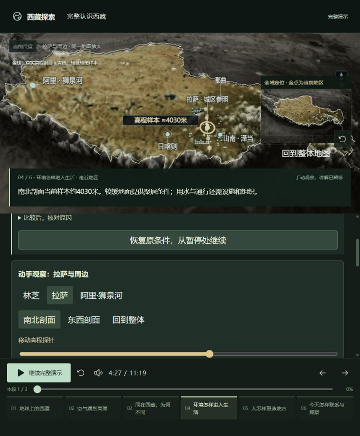
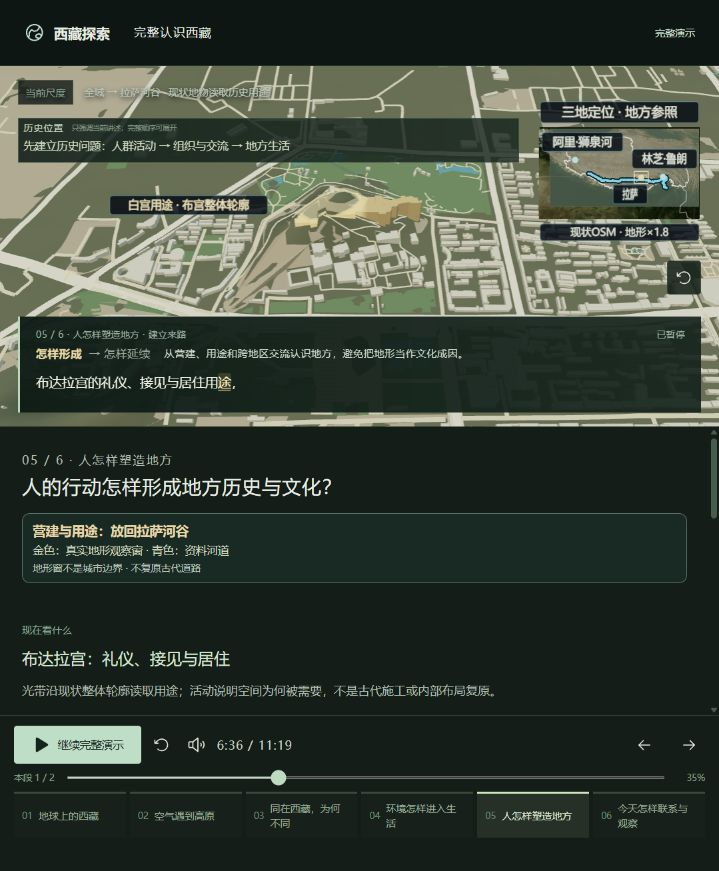
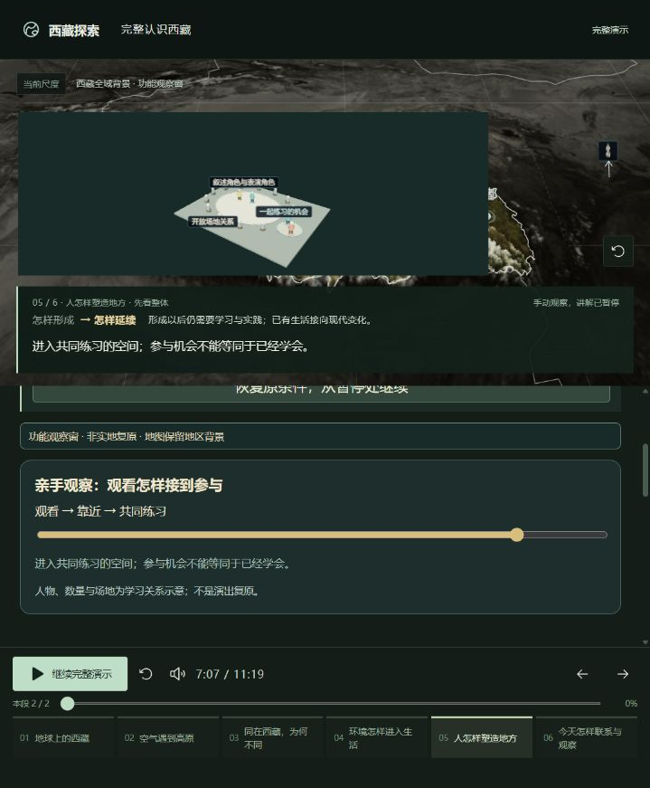
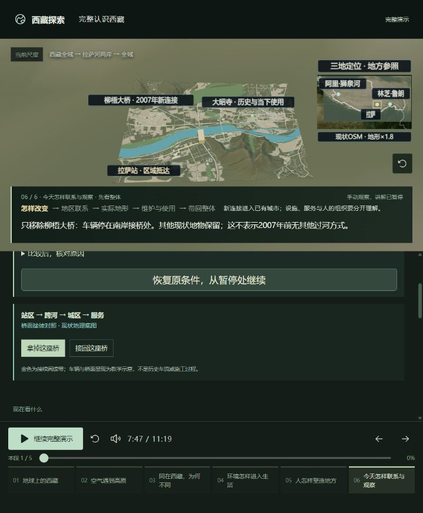
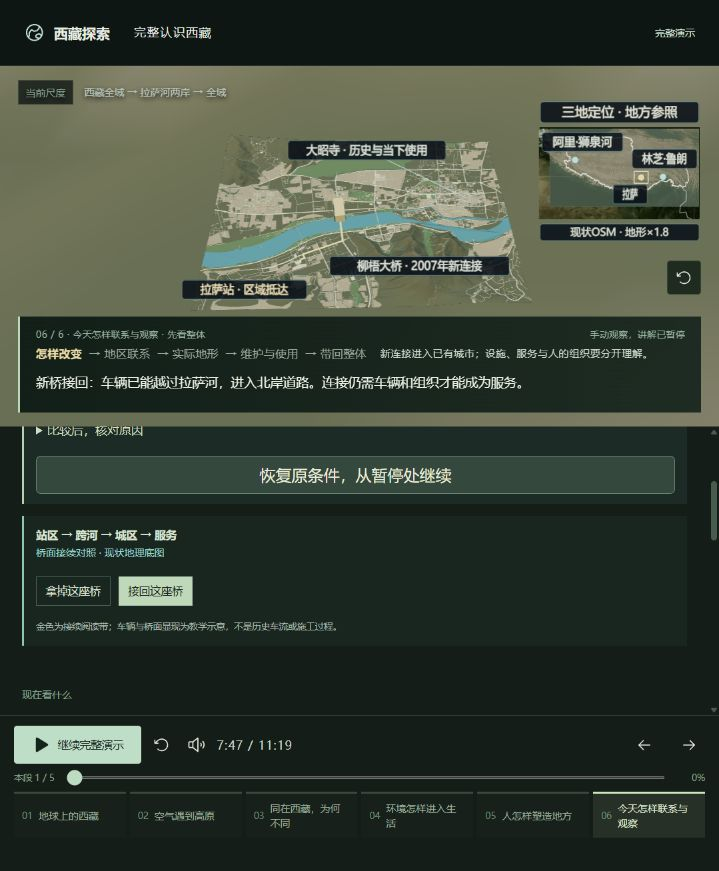
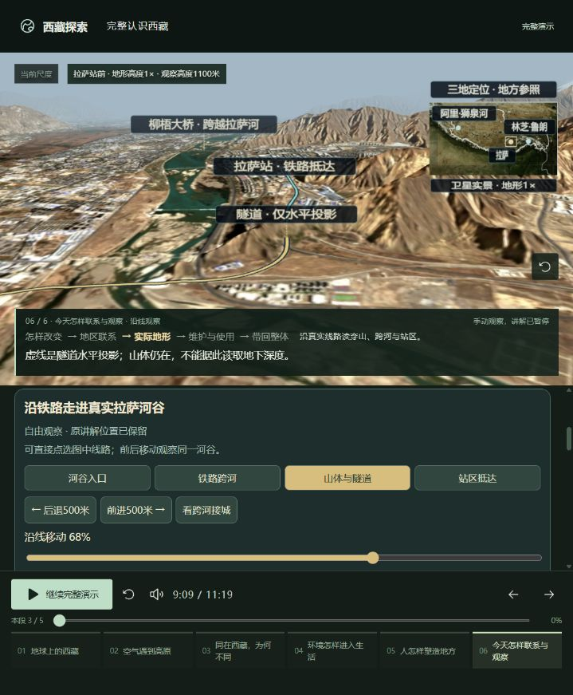
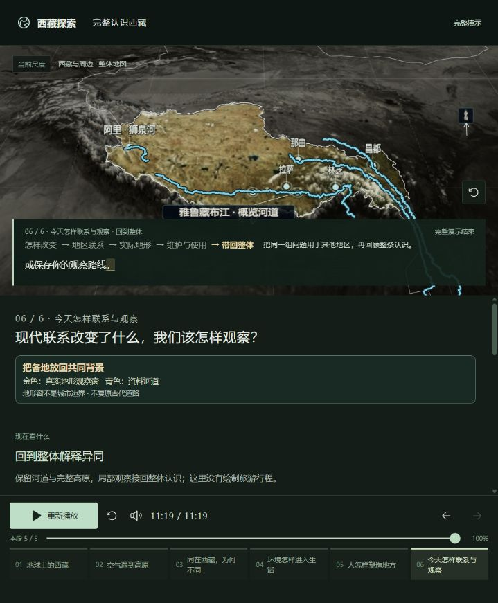

01
基本达标
地球上的西藏
- 已经能做什么
- 已能在同一地球中区分洲、国家、自治区与自然高原；定位层级和文字对应。
- 差距与边界
- 本章以观察和尺度定位为主，不要求虚构“改变地理”的实验。仍需首次观看者确认能区分行政范围与自然范围。
- 收口标准
- 用户能指出西藏所在层级，说明西藏自治区与青藏高原不是同一范围；能回到完整地球。
- 这章怎么处理
- 保留并冻结。不再加地理标签或扩展开场。
查看本轮证据 · 1 张

项目思路与阶段验收 · 2026-10-18
主线已贯通，整体产品尚未验收通过。
当前版本：六章 / 21段 / 11:19。本页记录最初目标、六章差距与明确的停止条件，不把“又优化了一轮”作为完成标准。
01 / 为什么做
目标是帮助没有背景知识的人，从完整地球找到西藏，理解全球环境与高原地形怎样造成地区差异，再理解人的行动怎样形成生活、文化与历史，最后带着问题观察今天的地方。
整体地图 → 具体地方 → 对照变化 → 解释原因 → 回到整体。语音、文字、标注与3D使用同一讲述位置；操作时暂停，返回时恢复。
1009项目只作为反思与原视频风格线索。本次没有取得原视频作逐帧对照，因此不宣称已复现其节奏或效果。
02 / 六章验收
“基本达标”仅表示本轮目标对应的功能与画面成立，不代表用户理解已验收。整体当前结论：暂不通过，先解决第4、5、6章的闭环。
| 章节 | 结论 | 取舍 |
|---|---|---|
| 01 地球上的西藏 | 基本达标 | 保留并冻结。不再加地理标签或扩展开场。 |
| 02 空气遇到高原 | 基本达标 | 保留并冻结现有机制，不扩展模拟精度。 |
| 03 同在西藏，为何不同 | 基本达标 | 保留冬夏两次对照。其他统计移入专题。 |
| 04 环境怎样进入生活 | 部分达标 | 只补一条生活因果链（M1）；保留三地背景，不为三地各建一套模型。 |
| 05 人怎样塑造地方 | 未达标 | 优先重组已有有据案例（M2），不追加零散建筑和人物。托林定位作为交流线索保留，不宣称复原古道。 |
| 06 今天怎样联系与观察 | 部分达标 | 冻结时长和案例，只补观察成果交接（M3），不再压录音。 |









03 / 固定问题清单
处理顺序：M2历史因果 → M1生活结果 → M3观察交接 → M4理解验收。以下均为待办，本轮没有将它们标成已完成。
M1 · 必须解决 · 第4章 · 待处理
复用已有地图与资料，选一个生活服务案例，显示条件、人的投入与使用结果。证据不足的建成效果不进入主线。
M2 · 优先解决 · 第5章 · 待处理
优先核对已有专题中的历史空间/使用调整材料，重组一个完整案例进入主线；保留来源、年份性质和推论边界。
M3 · 必须解决 · 第6章收尾 · 待处理
让现有观察计划接收一个地点、观察问题和资料来源，提供清楚的保存/编辑/返回路径。
M4 · 收口门槛 · 整场 · 待处理
M1—M3完成后，邀请3名未参与开发的观看者独立体验；每章一句解释，记录原话与误解，不由开发者代答。
04 / 如何停止重复迭代
从整体到局部认识西藏，地理、气候、生活、历史文化、发展与旅游相互衔接。
逐渐增加模型、地点、文字和标注，却把“讲到了”当作“演示清楚了”；频繁播放和局部打磨缺少结束条件。
六章与现有21段冻结。保留可用的气流、数据对照、桥梁和沿线观察；完整年代与扩展案例继续放在专题。本轮只新增本说明入口和验收记录。
处理M1—M3，每项提供一组前后证据和一个可复现操作。资料不支持的效果删除或降为明确的原理示意，不补造历史空间。
M4未做前保持“待验收”。通过后停止增加模型、案例、标签和时长调整，只处理新发现的事实错误或阻断使用的问题；新增愿望进入下一版本。
停止条件：四项都有明确结果与证据，六章能被用户解释，未解决问题被公开保留。测试通过、录音齐全、完整播放结束，都不能单独替代这个条件。
05 / 这次证明了什么
本轮采用定点取样与操作对照，没有整场重复播放，没有修改讲解、模型、镜头或录音。
本轮截图来自当前浏览器约719×870视口。功能检查达标不等于首次观看者已经理解；未重新核验全部外部史料，也未做整场语音时序、键盘与读屏或手机验收。
截图中的小标签与地图信息在当前窄视口存在拥挤风险；颜色也承担部分区分作用。此处记录风险，不声称已通过无障碍合规检查，本轮不扩展为手机适配项目。
资料责任分三层：有出处的事实、从事实做出的解释、为了理解而使用的原理示意。所有后续变化必须标明所属层级；现状地图不等于历史测绘，规划不等于建成，学习机会不等于已掌握技艺。